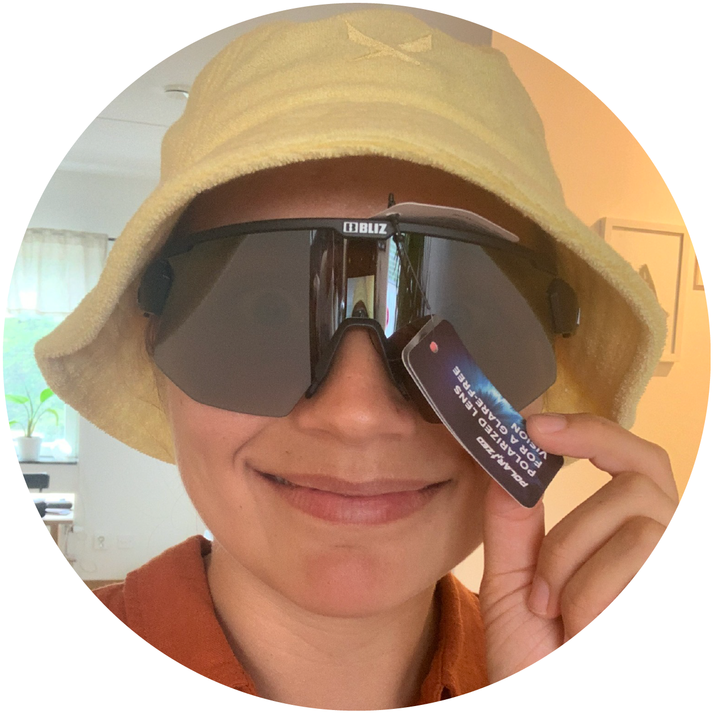

Varmt välkommen till min officiella födelsedagssida! Här anmäler du dig till den eller de aktiviteter du vill vara med på. Du hittar också information kring hållpunkter och meny samt svar på vanliga frågor
Göteborg.
Lördag 25 november, med start klockan 14:45.
Prison Island och födelsedagsfika, följt av fördrink och middag.
395 kr för Prison Island. Du betalar också själv för den mat & dryck du vill äta på middagen. (Du behöver inte tänka på någon present!)
Du kan välja att vara med på allt eller på bara en av aktiviteterna. Från mig får du fika, lagemblem, fördrink och andra överraskningar.♥
Samling vid hållplatsen Krokslätts torg, Mölndal.
Spänn musklerna och gnugga geniknölarna, för på Prison Island ska det tävlas i lag. Födelsedagsfika ingår!
Fria aktiviteter! Kanske vill du duscha, ta en förfördrink eller fixa dig inför kvällen? Då är detta din tid!
Samling på Järntorget. Härifrån är det en liten promenad till restaurangen.
Dags för fördrink och middag! Restaurang avslöjas samma dag. Mat behöver förbeställas och du hittar meny längre ned på sidan.
Vad ska jag ta med till Prison Island?
Oömma kläder är en fördel. Räkna med att bli varm då utmaningarna kan vara fysiskt krävande.
Kan jag duscha på Prison Island?
Ja, det kan du. Om du inte vill eller hinner åka hem mellan Prison Island och middagen, kan du alltså duscha här.
Behöver jag köpa present?
Nej, det behöver du naturligtvis inte.
Måste jag vara med på allt?
Nej, du kan välja att vara med på bara den ena eller den ena aktiviteten (Prison Island eller middagen) om du inte vill vara med på allt.
Får jag ta med en kompis/partner?
Privat inbjudan gäller. Kontakta Matilda om du vill ta med en +1.
Kommer det finnas sjukvård på plats?
Ja, Dr Swedenfeldt kommer finnas med vid behov av akut sjukvård.